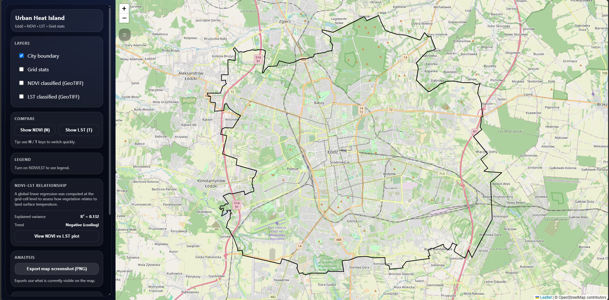
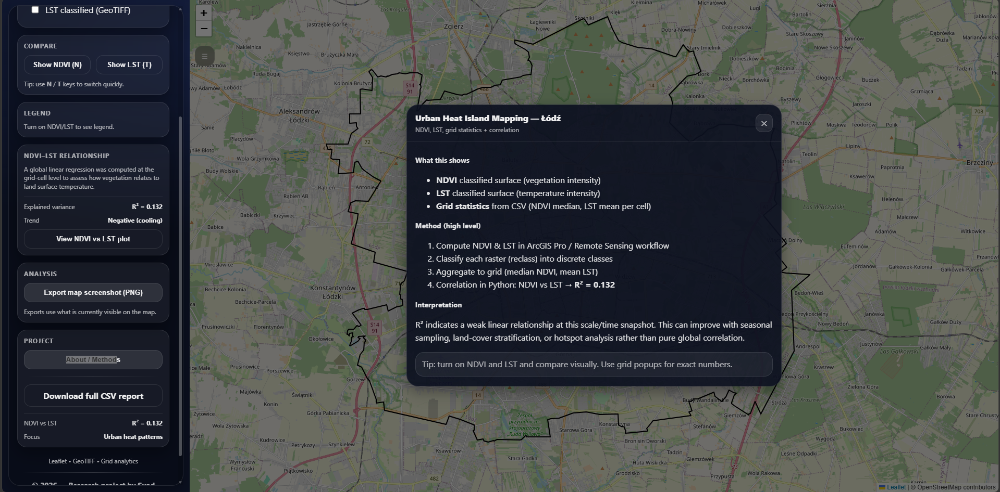
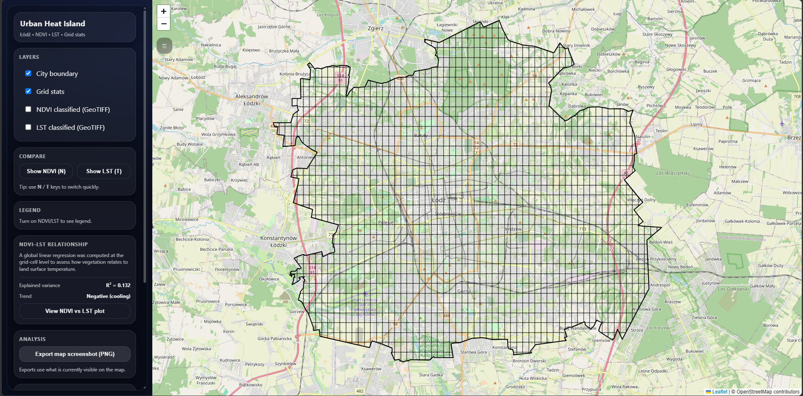
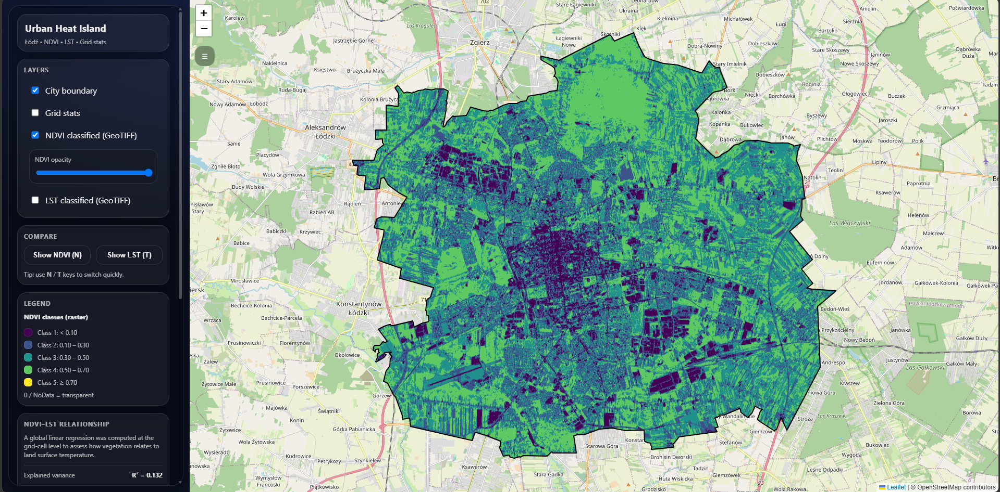
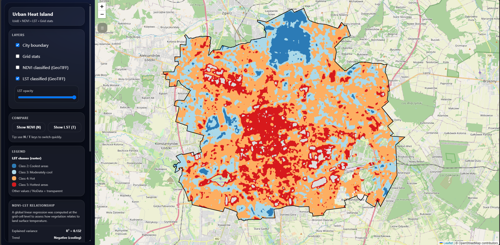
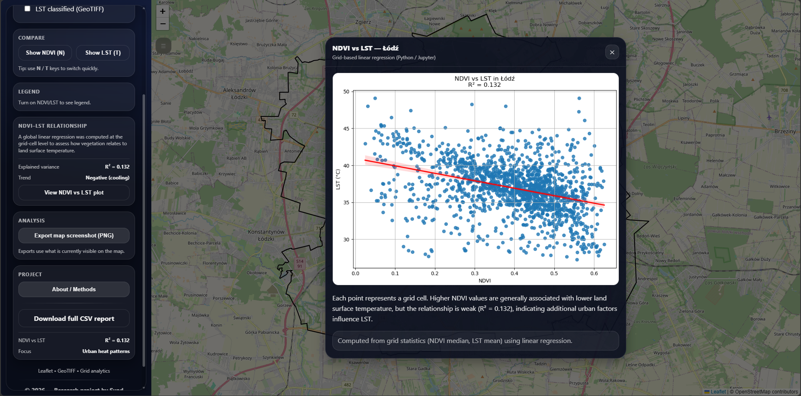
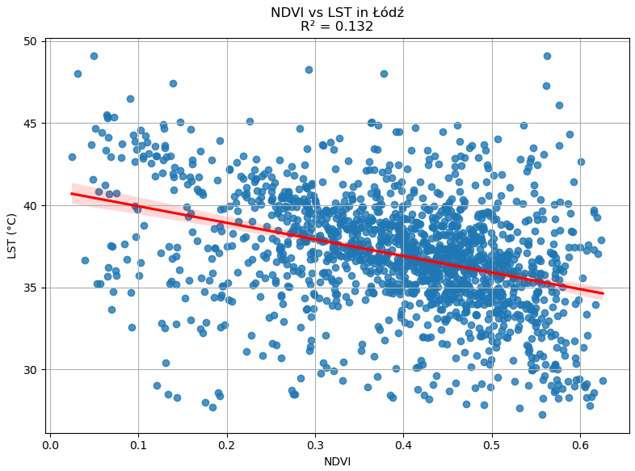

Independent research application
Urban Heat Island — Łódź
Sentinel-2 NDVI and Landsat-8 LST combined on a 500 m grid across Łódź — with regression, classified rasters, and an open web map for neighbourhood-level exploration.
1,544Grid cells (500 m over Łódź)
0.132R² (NDVI vs LST regression)
GEESentinel-2 + Landsat-8 pipeline
Overview
What this project does
A static web map that layers summer NDVI and land-surface temperature on a 500 m grid over Łódź. Users toggle classified rasters, inspect cell values, and open a regression summary — so neighbourhood-level hot and green spots are visible, not only a city-wide average.
Research questions
What I set out to answer
- How strongly is vegetation (NDVI) associated with land-surface temperature at 500 m grid scale in Łódź for a summer window?
- Where do hotter and greener cells cluster — and where do neighbouring cells diverge sharply?
- Can an interactive map make grid statistics explorable without a separate statistics file?
- What do the limits of a weak city-wide correlation imply for green-infrastructure planning narratives?
Key findings
What the analysis showed
- Greener cells tend to be cooler, but NDVI explains only about 13% of LST variance (R² = 0.132) at this scale and season.
- Heat and vegetation are patchy — industrial corridors and parks can sit beside hot sealed blocks; a single city average would wash that out.
- The grid plus interactive map let readers see which cells sit above or below the regression line and where they are on the ground.
Application
Screenshots
Click any image to zoom in.






